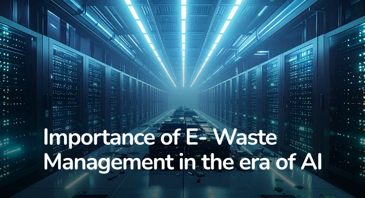

Blogs

What Happens to Your Laptop After You Throw It Away
Find out where discarded laptops go and how responsible recycling prevents toxic pollution.
Read More

E-Waste Is the Fastest Growing Waste Problem in the World
Why e-waste is growing rapidly and how responsible recycling recovers valuable materials and protects communities.
Read More

How Companies Can Manage E-Waste Responsibly
Technology is at the center of modern business. Every company depends on devices to operate, communicate, and grow. But technology is temporary. Devices age. Systems become slow. Hardware is replaced to maintain efficiency and security. What remains is electronic waste.
Read
More

How to Dispose of E-Waste Responsibly
You have decided to finally deal with that box of old electronics. Good. Now
what?
Most people get stuck here. They know they should not just throw old gadgets
in the bin, but they are not sure what the alternative looks like. At E2E
Recycling, we get this question all the time. As India's fastest growing
e-waste recycling company.
Read
More

What is E-Waste and Why Should You Care?
You cleared out your drawer last weekend and found three old phones, a
charger that fits nothing you own anymore, and a printer that stopped
working two years ago. Sound familiar?
Most of us have a graveyard of old gadgets sitting somewhere at home. We
know we should do something about them. We just never quite get around to
it.
That pile has a name: e-waste.
Read
More

Importance of E- Waste Management in the era of AI
Artificial Intelligence is growing fast. Faster than most people expected.
New devices arrive every year. Smarter phones. Faster laptops. Better
servers. Each one promises more power, more speed, more convenience.
Read
More

E-Waste Management in India: The Urgent Need for Sustainable Solutions
India is the world's third-largest producer of e-waste, following the US and
China. With rapid technological advancements, the amount of discarded
electronic equipment continues to rise, creating a serious environmental
threat. This issue is particularly concerning in India, where 95% of e-waste
is handled by the illegal informal sector.
Read
More

Why E-Waste Recycling is Crucial for a Sustainable Future in India
The IT wave has massively increased the demand for electronic equipment,
leading to a surge in e-waste piling up in landfills. While we eagerly
upgrade to the latest laptops, smartphones, and gadgets, e-waste disposal
remains a growing environmental concern.
Read
More

E-Waste vs. General Waste: What’s the Difference?
We live in a world where technology evolves faster than we can keep up.
Phones, laptops, TVs, and tablets become outdated every few years, and we
often don’t think twice before tossing them out. But did you know that
disposing of electronic waste (e-waste) the same way we throw away food
wrappers or household garbage can be extremely harmful?
Read
More